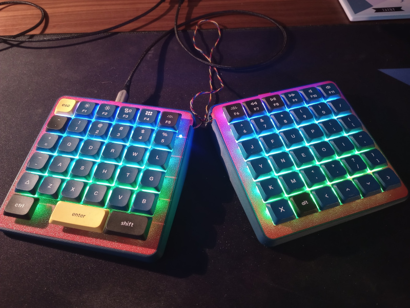

|
MKX
v2.0.0
Next Generation Mechanical Keyboard Firmware
|

|
|
MKX
v2.0.0
Next Generation Mechanical Keyboard Firmware
|
|
The boot_cfg function can be used in boot.py, which should be placed in the root directory of your CircuitPython device, alongside code.py or main.py.
boot.py runs only once at startup, before any workflows are initialized. This allows you to configure USB and other settings dynamically at startup, rather than relying on fixed defaults.
Because the serial console is not yet available, output is written to boot_out.txt. For a more detailed explanation, see the CircuitPython Documentation.
If an error occurs during startup, the device should fall back to a mountable and debuggable configuration.
⚠️️ Warning: Always back up your code before disabling the storage feature. In critical scenarios incorrect pin configuration or other errors can make the board unresponsive.
In such cases, a hard reset may be required, which erases all data and necessitates re-uploading your code.
sense
sense accepts either uninitialized microcontroller.Pin, or digitalio.DigitalInOut. The boot configuration is only applied if sense reads True or "high", and skipped if it reads False or "low". If sense is an uninitialized Pin, it'll be configured as pulled-up input; it wont be further configured if it is a DigitalInOut.
source
source accepts either uninitialized microcontroller.Pin, digitalio.DigitalInOut, or None. It's the "source" of the test voltage to be read by the sense pin. If source is an uninitialized Pin, it'll be configured as a "low" output; it wont be further configured if it is a DigitalInOut.
Common matrix and direct pin configurations (see also the examples below):
| diode_orientation | sense pin | source pin |
|---|---|---|
COL2ROW | column | row |
ROW2COL | row | column |
| direct pin | direct pin | None |
autoreload
By default, CircuitPython automatically reloads whenever files are saved (and sometimes unexpectedly due to board glitches).
This behavior is useful during development, allowing you to see changes immediately.
For everyday use, it’s recommended to disable autoreload to improve stability.
boot_device
Boot HID device configuration for usb_hid, see the usb_hid documentation for details.
cdc
Enables or disables the USB endpoint that provides the CircuitPython serial console (REPL), allowing or preventing access to the interactive prompt over USB.
consumer_control
Enable the HID endpoint for consumer control reports. Those are extra keys for things like multimedia control and browser shortcuts.
keyboard
Enable the keyboard HID endpoint.
midi
Enable MIDI over USB. Enabled by default in CircuitPython, but most keyboards don't use it.
mouse
Enables the HID USB endpoint for a pointing device. Unlike a keyboard, a mouse provides continuous input along multiple axes, allowing movement in all directions rather than discrete key presses.
nkro
Enables N-key rollover support. When the default keyboard is active, this replaces the standard 6-key rollover endpoint with an N-key rollover endpoint.
This is not a standard HID feature, so it’s intended for advanced users who understand the implications.
pan
Enables horizontal scrolling (panning) for the HID pointing device (mouse) endpoint.
storage
Disables USB storage to prevent your computer from automatically recognizing the device as a new removable drive when the keyboard is connected.
Preventing the board from appearing as a mass storage device, may be important for cybersecurity policies in some workplaces.
usb_id
Introduced in CircuitPython 8, this allows you to customize your keyboard’s USB identity instead of using the default “MCU board manufacturer – CircuitPython device.”
return value
boot_cfg returns True if the boot configuration was applied successfully, and False if it was skipped.
This allows the sense pin mechanism to be reused for other custom boot configurations.
Any unexpected errors are not caught intentionally, so they are recorded in boot_out.txt to facilitate debugging.
Example:
Simple MKX class for keyboard with one MCU.
Manages keyboard operation and handles communication with the computer.
Keep things simple and efficient if you are not building split keyboard with two MCU.
Example:
Main MKX class for split keyboards with many communicating MCU.
Manages keyboard operation and handles communication with the computer.
keymap
Add keymap object to the MKX_Central. May be also added later with the add_keymap() method.
coord_mapping
Add custom coord_mapping object to the MKX_Central.
Usualy coord_mapping is defined while MKX Interpfaces declaration.
May be also added later with the add_coord_mapping() method. # TO DO
Example:
Add PeripheryCentral to the ***MKX_Central**.
central_periphery
PeripheryCentral object.
Example:
Add Interface of a Periphery to the MKX_Central.
interface
Interface object.
Example:
Add LayerStatusLed to the MKX_Central.
status_led
LayerStatusLed object.
Example:
Add Backlight to the MKX_Central.
backlight
Backlight object.
Example:
Add Keymap to the MKX_Central.
Keymap must have rectangular shape. In custom layouts where certain positions are unused, set them to None.
keymap
Keymap object.
col_size
Keymap layer max column number.
Counting starts from '0'.
row_size
Keymap layer max row number.
Counting starts from '0'.
Example:
Enable or disable BLE.
use_ble
Flag to enable or disable BLE connection, default False.
Example:
Start running keyboard's infinite loop.
The general Periphery captures keystrokes and transmit messages to the MKX_Central.
The MKX_Periphery is a simpler counterpart to the MKX_Central,
operating continuously on hardware separate from the MKX_Central.
Each MKX_Periphery is assigned a general Periphery.
The general Periphery can be implemented as PeripheryCentral, which operates on the same hardware module as the Central,
or as PeripheryUART, on a separate hardware module and communicates via UART.
uart_peryphery
PeripheryUART object (or other derived from the PeripheryAbstract).
debug
Flag enabling verbose output for the Periphery.
Set the PeripherySingle for a single matrix on the same hardware as the main controller.
col_pins
List of column pins.
row_pins
List of row pins.
** kwargs
Other optional arguments.
Example:
Set the PeripheryCentral.
device_id
Device id/name.
col_pins
List of column pins.
row_pins
List of row pins.
** kwargs
Other optional arguments.
Example:
Set the PeripheryUART.
device_id
Device id/name.
col_pins
List of column pins.
row_pins
List of row pins.
tx_pin
TX communication pin.
rx_pin
RX communication pin.
baudrate
UART communication baudrate.
** kwargs
Other optional arguments.
Example:
Set the PeripheryTouch for capacitive touch sensing using the MPR121 touch sensor.
i2c
I2C bus object (see I2C Helper section).
address
I2C address of the MPR121 sensor.
irq_pin
Optional interrupt pin for the MPR121. When provided, the sensor reads only when the IRQ pin is active (LOW). Improves performance by reducing unnecessary polling.
Methods:
fire_only_on_2electrodes(enable: bool)
Configure matrix mode to track exactly two active electrodes.
Used for 2D touch matrix applications. No support of multi-touch.
set_thresholds(touch: int = 12, release: int = 6)
Set touch and release thresholds for electrode sensitivity. Release threshold must be lower than touch threshold.
get_thresholds() -> tuple[int, int]
Get current touch and release thresholds. Returns (touch_threshold, release_threshold).
electrode_values() -> dict
Read electrode values from the MPR121. Returns a dictionary with electrode indices and their values, or None if no state change occurred.
Example:
MKX class for capacitive touch sensing keyboards using the MPR121 touch sensor.
Manages touch electrode inputs and converts them to keyboard events with optional haptic feedback.
Supports both single electrode mode and simplified matrix mode (2 electrodes per key next to each other, but these are not send and listen electrodes).
No support for multi-touch matrix, many keys pressed at once like: CTRL+C. But can call macro keys like: COPY = M_LCTL(C)
No support for split keyboards.
Can't mix with classical switches, pressed keys scanning is different.
Parameters:
None (inherits all methods from MKX_Abstract).
Methods:
use_irq(irq_pin)
Enable IRQ (interrupt request) mode using the specified pin. Improves performance by polling only when touch is detected.
add_periphery_touch(periphery_touch: PeripheryTouch)
Add a PeripheryTouch object to handle contact with the MPR121 sensor.
add_haptic(haptic: Haptic)
Add a Haptic object for vibration feedback on touch events.
run_forever()
Start the infinite loop for processing touch events.
Example (Single Touch Interface):
Example (2-Electrode Matrix Mode):
The Interface connects the Peripheries to the MKX_Central.
Possible options are InterfaceCentral matching the PeripheryCentral and
InterfaceUART matching the PeripheryUART.
Example:
Set simpler InterfaceSingle for a hardware with one MCU.
col_min
Minimum column number. Counting start from '0'.
row_min
Minimum row number. Counting start from '0'.
col_max
Maximum column number. Counting start from '0'.
row_max
Maximum row number. Counting start from '0'.
Min/max column and rows values can be inverted, meaning min value can be bigger than max.
Inverted min/max column and rows values will change the keys mapping.
Example:
Set the InterfaceCentral for split keyboards with two MCU.
Min/max column and rows values can be inverted, meaning min value can be bigger than max.
Inverted min/max column and rows values will change the keys mapping.
central_periphery
PeripheryCentral object.
col_min
Minimum column number. Counting start from '0'.
row_min
Minimum row number. Counting start from '0'.
col_max
Maximum column number. Counting start from '0'.
row_max
Maximum row number. Counting start from '0'.
Set the InterfaceUART.
device_id
Device id/name, must match the device_id of the Periphery.
tx_pin
TX communication pin.
rx_pin
RX communication pin.
col_min
Minimum column number. Counting start from '0'.
row_min
Minimum row number. Counting start from '0'.
col_max
Maximum column number. Counting start from '0'.
row_max
Maximum row number. Counting start from '0'.
baudrate
UART communication baudrate.
Interface for capacitive touch sensing.
Supports both single electrode mode and simplified matrix mode (2 electrodes per key next to each other, but these are not send and listen electrodes).
No support for split keyboards.
electrodes
Dictionary mapping I2C address to list of electrode pins for single electrode mode.
Example: {0x5B: (0, 1, 2, 3, 4, 5)}
electrodes_col
Dictionary mapping I2C address to column electrode pins for matrix mode.
Example: {0x5B: (0, 1, 2)}
electrodes_row
Dictionary mapping I2C address to row electrode pins for matrix mode.
Example: {0x5B: (8, 9, 10, 11)}
col_min, row_min, col_max, row_max
Grid boundaries defining the touch interface area.
Example (Single Electrode Mode):
Example (Matrix Mode - 2 Electrodes per Key):
Linear slider interface for continuous value input using capacitive electrodes.
electrodes
Dictionary mapping I2C address to list of electrode pins forming the slider track.
Electrodes are ordered from slider minimum to maximum position.
Example: {0x5B: (0, 1, 2, 3, 4)}
slider_keymap
List of tuples for each layer, each containing (key_increase, key_decrease).
Example: [(Keys_standard.UP, Keys_standard.DOWN)]
step_size
Normalized motion required to trigger one step event (default 0.05 = 5% of slider range).
dynamic_step
Enable automatic step size adjustment based on movement speed (default False).
Fast movements produce smaller steps for rapid scrolling; slow movements produce larger steps for precision.
max_steps_per_loop
Maximum number of key events generated per process call (default 5). Prevents burst transmission.
value_min, value_max
Normalized range for slider values (default 0.0 to 1.0).
Example:
Circular wheel interface for continuous rotational input using capacitive electrodes "closed, continous slider".
electrodes
Dictionary mapping I2C address to list of electrode pins arranged in circular order around the wheel.
Example: {0x5B: (0, 1, 2, 3, 4, 5, 6, 7)}
Electrodes should be ordered clockwise or counterclockwise around the wheel.
slider_keymap
List of tuples for each layer, each containing (key_clockwise, key_counterclockwise).
step_size
Normalized rotational motion required to trigger one step event (default 0.05 = 5% of wheel circumference).
dynamic_step
Enable automatic step size adjustment based on rotation speed (default False).
Fast rotations produce smaller steps for rapid navigation; slow rotations produce larger steps for precision.
max_steps_per_loop
Maximum number of key events generated per process call (default 5). Prevents burst transmission.
value_min, value_max
Normalized range for rotational values. Uses circular unwrapping for continuous rotation detection.
Example:
Status LED used for the indication of the active layer.
RGB NeoPixel LED which indicates active layer by color.
status_led_pin
Pin for the RGB NeoPixel LED.
brightness
Brightness of the LED in the range 0-1.
auto_write
Flag to update LED color automaticly.
Example:
RGB three pin LED which indicates active layer by color.
Untested! due to lack of proper hardware configuration.
red_pin
Red LED pin.
green_pin
Green LED pin.
blue_pin
Blue LED pin.
Array of LED which indicates active layer.
Untested! due to lack of proper hardware configuration.
pins
List of pins for LED-s.

RGB NeoPixel backlight.
Static color backlight.
pin
Pin for the backlight RGB NeoPixel LED-s.
num_pixels
Number of the RGB NeoPixel LED-s.
rgb_color
Peaked values of the RGB color.
brightness
Brightness of the LED in the range 0-1.
Example:
Rainbow animated color backlight.
pin
Pin for the backlight RGB NeoPixel LED-s.
num_pixels
Number of the RGB NeoPixel LED-s.
brightness
Brightness of the LED in the range 0-1.
Hom much faster should be the rainbow animation from the initial one.
value
Increased animation speed up to 20.
Hom much slower should be the rainbow animation from the initial one.
value
Decreased animation speed up to 20.
Should the LED-s change color independently by swirl or not.
swirl
Swirl or not.
Example:
Utility function for initializing and configuring I2C communication on CircuitPython devices.
Provides automatic device scanning and error handling with visual feedback on error via status LED.
scl_pin
SCL (clock) pin for I2C communication (default: board.SCL).
sda_pin
SDA (data) pin for I2C communication (default: board.SDA).
status_led
Optional status LED object for error indication.
If provided, errors will trigger LED red pulsing.
return value
Returns initialized I2C bus object, or None on failure.
On success, prints a list of discovered I2C devices and their addresses in hexadecimal format.
Behavior:
Example:
Haptic feedback driver using the DRV2605 motor driver for vibration effects.
Supports both ERM (Eccentric Rotating Mass) and LRM (Linear Resonant) motors.
i2c
I2C bus object (see I2C Helper section).
The DRV2605 uses fixed I2C address 0x5A.
effect_id
Integer ID of the haptic effect to use (0-122, depending on DRV2605 firmware).
Common effects: 1 (strong click), 2 (strong buzz), 52 (select click), etc.
enable_pin
Digital output pin controlling the DRV2605 EN (enable) signal.
Must be HIGH for the driver to function. Common mistake to forget to enable the device!
duration
Optional duration (in seconds) for the haptic effect.
If specified, the effect will automatically stop after this duration.
Set to None for the effect full playback.
play_on_init
If True, automatically plays the effect once during initialization for testing (default False).
Methods:
set_ERM_motor()
Configure for ERM (Eccentric Rotating Mass) vibration motor.
Use for typical small vibration motors common in keyboards and phones.
set_LRM_motor()
Configure for LRM (Linear Resonant) vibration motor.
Use for haptic actuators with linear motion characteristics.
set_electrodes(electrodes: dict)
Define which electrodes trigger haptic feedback. Enables selective haptic response per touch area.
Ex. on buttons vibrate, on sliders don't.
electrodes: Dictionary mapping I2C address to list of electrode indices.
Example: